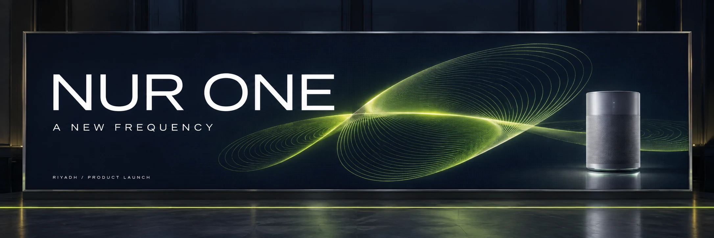
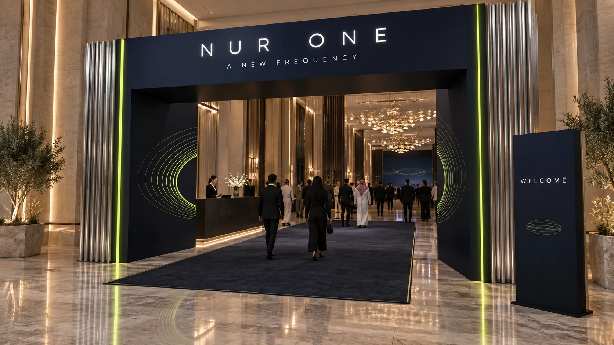
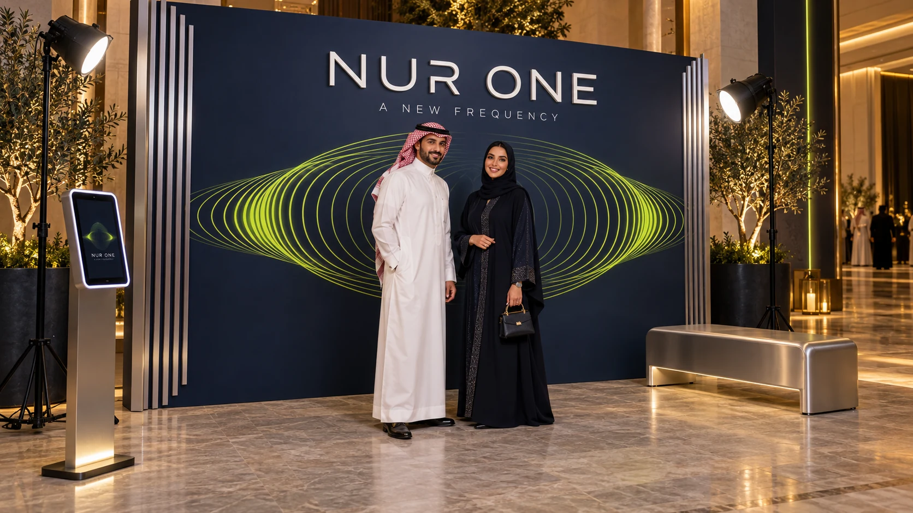
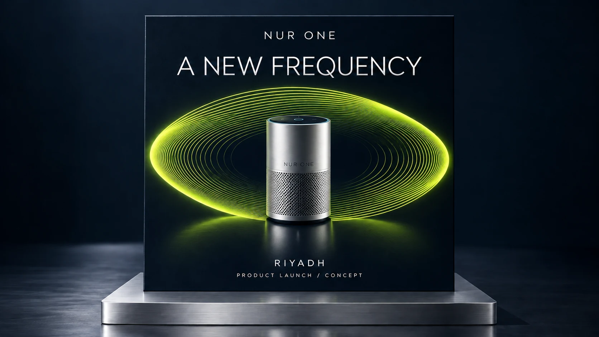
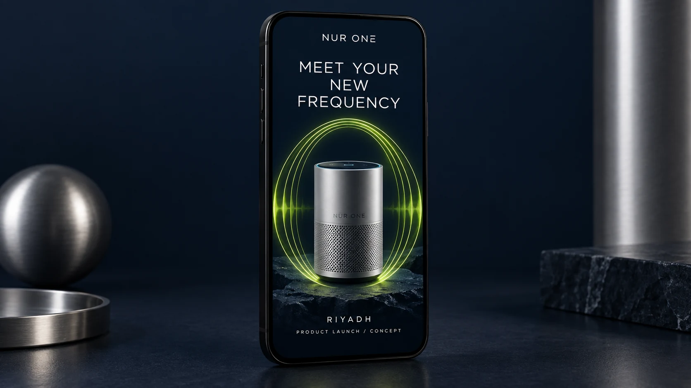

The entrance establishes the campaign and directs guests into the room.
Event design / Riyadh / 2026
NUR ONE
A new frequency.
A fictional audio product launch, imagined as one connected experience across space, screen and social.

THE BRIEFONE IDEA, SIX APPLICATIONS
Make sound
take shape.
Imagine the Riyadh debut of NUR ONE, a fictional premium smart speaker. The design should give a corporate audience a clear arrival, a focused product reveal and a memorable moment to share.
- PROJECT TYPE
- Independent concept
- CONTEXT
- Fictional Riyadh launch
- DESIGN SCOPE
- Spatial concept & campaign
- VISUAL OUTPUT
- 6 presentation mockups
One signal.
Every touchpoint.
An elliptical sound wave connects the LED content, welcome portal, photo moment and campaign. Silver fins echo audio hardware; a navy field gives lime light and white type room to stand out.
#071321#D8FF2D#BFC6CE
Midnight navy / Electric lime / Brushed silver
DESIGN APPLICATIONS02—06





THE GUEST JOURNEYARRIVE → DISCOVER → SHARE
The stage focuses attention on the central product reveal.
The photo zone offers an easy, recognizable branded moment.
Feed and story graphics extend the visual identity beyond the venue.
Self-Initiated Concept Project
NUR ONE, the product and the event are fictional. This independent portfolio study uses AI-assisted concept imagery and demonstrates visual direction, not a commissioned or delivered event. No client results or attendance claims are implied.
Dimensions and materials are design intentions. Venue survey, fabrication drawings, structural review, LED specifications and supplier approval would be needed before production.